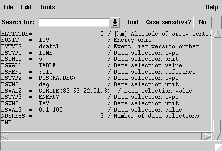

Getting started
First steps with ctools
This page gives provides a step-by-step description of the CTA data analysis procedure implemented in ctools. In this example we will simulate data for the Crab nebula, observed on-axis, as a single source in the CTA field of view.
The example consists of the following analysis steps:
And please read also:
CTA data are simulated by the executable ctobssim. To start the executable, type ctobssim at the console prompt (which is denoted by >). It will query for a number of parameters. The example shown below will work on a system that has been installed in the default directory /usr/local/gamma. If ctools have been installed in another directory, please adjust the parameter names accordingly.
> ctobssim
Model [test/data/crab_alone.xml] /usr/local/gamma/share/models/crab.xml
Output event data file [events.fits]
Calibration database [test/irf] /usr/local/gamma/share/caldb/cta
Instrument response function [kb_E_50h_v3]
RA for ROI centre (degrees) (0-360) [83.63]
Dec for ROI centre (degrees) (-90-90) [22.01]
Radius of ROI (degrees) (0-180) [10.0]
Start time (MET in s) (0) [0.0]
End time (MET in s) (0) [1800.0]
Lower energy limit (TeV) (0) [0.1]
Upper energy limit (TeV) (0) [100.0]
Each line represents a query for one parameter. The line starts with a short description of the parameter, followed by the default parameter value proposed by ctobssim in squared brackets [ ]. If no parameter is entered (which is the case for the majority of parameters shown here), the default parameter will be used.
The CTA instrument properties (effective area, PSF width) are taken for the moment from Konrad Bernlöhrs sensitivity files which are stored in /usr/local/gamma/share/caldb/cta. To test another CTA configuration you may adapt the instrument response function name accordingly (see the final remarks).
Events are simulated based on the instrument properties and based on a source and background model. Only events that fall within the specified region of interest (ROI), defined as a circle around a sky position in Right Ascension and Declination (in degrees), will be stored in the output event data file. The duration of the simulation is taken here to 30 minutes (or 1800 seconds). Events are simulated for energies between 0.1 and 100 TeV.
The source and background model is defined by the XML file /usr/local/gamma/share/models/crab.xml:
<?xml version="1.0" standalone="no"?>
<source_library title="source library">
<source name="MAGIC Crab (Albert et al. 2008, ApJ,
674, 1037)" type="PointSource">
<spectrum type="PowerLaw">
<parameter name="Prefactor" scale="1e-16" value="5.7"
min="1e-07" max="1000.0" free="1"/>
<parameter name="Index"
scale="-1" value="2.48"
min="0.0" max="+5.0"
free="1"/>
<parameter name="Scale"
scale="1e6" value="0.3"
min="0.01" max="1000.0" free="0"/>
</spectrum>
<spatialModel
type="SkyDirFunction">
<parameter
name="RA" scale="1.0" value="83.6331" min="-360" max="360"
free="0"/>
<parameter
name="DEC" scale="1.0" value="22.0145" min="-90"
max="90" free="0"/>
</spatialModel>
</source>
<source name="Background" type="RadialAcceptance"
instrument="CTA">
<spectrum type="PowerLaw">
<parameter name="Prefactor" scale="1e-6" value="61.8"
min="0.0" max="1000.0" free="1"/>
<parameter name="Index"
scale="-1" value="1.85" min="0.0"
max="+5.0" free="1"/>
<parameter name="Scale"
scale="1e6" value="1.0" min="0.01" max="1000.0"
free="0"/>
</spectrum>
<radialModel
type="Gaussian">
<parameter name="Sigma" scale="1.0" value="3.0" min="0.01"
max="10.0" free="1"/>
</radialModel>
</source>
</source_library>
The model consists of a source library that contains 2 "sources": the Crab nebula and an instrumental background model.
The Crab nebula is modelled by a factorized sky model that has a spectral and a spatial component (tags <spectrum> and <spatialModel>, respectively). The spectrum is modelled by a power law, which is defined by 3 parameters: the Prefactor, the Index and the Scale. The spatial model has 2 parameters: Right Ascension in degrees (RA), and Declination in degrees (DEC). Each parameter has a value and a scale factor, the real value of the parameter being the product value * scale. Typically, scale is chosen so that value is of the order of 1 (this is relevant for model fitting later). In addition, value is bound by a minimum (min) and maximum (max) value, and a parameter may be free (free="1") or fixed (free="0"). The min, max, and free attributes are not relevant here for the simulations, but they will be important for the model fitting later.
The spectral intensity I(E) (in units of photons/cm2/s/MeV) of the power law is given by
I(E) = Prefactor * (E/Scale)^Index
where the E and Scale are given in MeV.
The instrumental background of CTA is modelled by a factorized data model that has a spectral and a radial component (tags <spectrum> and <radialModel>, respectively). The spectral component describes the on-axis background counting rate of CTA as function of energy in units of counts/s/sr/TeV. The radial component describes the variation of the background rate with offset angle squared, (i.e. square of the offset angle with respect to the pointing direction) which is modelled here by a Gaussian. The only parameter of the radial component is the width of the Gaussian Sigma, which is here set to 3 degrees squared.
ctobssim has a couple of hidden parameters, the most important one being certainly seed. seed is an integer that specifies the seed value for the random number generator, and changing this parameter will allow to generate statistically independent Monte Carlo samples of CTA event data. To use for example a seed value of 41 one should type:
> ctobssim seed=41
ctobssim will write 2 files in the working directory: events.fits and ctobssim.log. The first file contains the simulated events in FITS format and can be inspected using fv or ds9. The FITS file will contain 3 extensions: an empty primary image, a binary table named EVENTS that holds the events (one row per event), and a binary table named GTI holding the Good Time Interval (for the moment a single row with 2 columns providing the start and the stop time of the simulated time interval).
The second file produced by ctobssim is a human readable log file that contains information about the job execution. As example, the last lines from this file are shown here:
2011-01-31T23:50:39: +==================+
2011-01-31T23:50:39: | Simulate photons |
2011-01-31T23:50:39: +==================+
2011-01-31T23:50:39: Simulated photons .........: 33943
2011-01-31T23:50:39: Simulation area ...........: 3.2e+10 cm2
2011-01-31T23:50:39: Simulation cone ...........: RA=83.63
deg, Dec=22.01deg, r=10 deg
2011-01-31T23:50:39: Time interval .............: 0 s - 1800 s
2011-01-31T23:50:39: Energy range ..............: 100 GeV -
100 TeV
2011-01-31T23:50:39: Random number seed ........: 1
2011-01-31T23:50:39:
2011-01-31T23:50:39: +=================+
2011-01-31T23:50:39: | Simulate events |
2011-01-31T23:50:39: +=================+
2011-01-31T23:50:39: MC source events ..........: 649
2011-01-31T23:50:39: MC background events ......: 3407
2011-01-31T23:50:39:
2011-01-31T23:50:39: +==========================+
2011-01-31T23:50:39: | Save events in FITS file |
2011-01-31T23:50:39: +==========================+
2011-01-31T23:50:39:
2011-01-31T23:50:39: Application "ctobssim" terminated after consuming
14 seconds of CPU time.
Each line starts with the UTC time at which the line has been written. In this run, 33943 Crab photons have been thrown over an area of 3.2 square kilometres during a time interval of 1800 seconds. 649 of these photons have been registered by CTA as events. In the same time interval, 3407 background events have been registred by CTA.
As next analysis step the data are binned in a counts map using the executable ctbin. A counts map is a 3 dimensional data cube, spanned by Right Ascension (or Galactic longitude), Declination (or Galactic latitude), and the logarithm (base 10) of energy.
ctbin is executed by typing:
> ctbin
Event data file name [test/data/crab_events.fits.gz] events.fits
Output file name [cntmap.fits]
Start value for first energy bin in TeV [0.1]
Stop value for last energy bin in TeV [100.0]
Number of energy bins [20]
Projection method e.g. AIT|ARC|CAR|GLS|MER|NCP|SIN|STG|TAN [CAR]
Coordinate system (CEL - celestial, GAL - galactic) (CEL|GAL) [CEL]
First coordinate of image center in degrees (RA or galactic l) [83.63]
Second coordinate of image center in degrees (DEC or galactic b)
[22.01]
Image scale (in degrees/pixel) [0.02]
Size of the X axis in pixels [200]
Size of the Y axis in pixels [200]
In this example we adjust the event data file name and accept all the remaining parameter defaults as they perfectly satisfy our needs. The counts map will be centred on the location of the Crab (Right Ascension 83.63 degrees, Declination 22.01 degrees) and will be aligned in celestial coordinates. A cartesian projection has been selected (note that the cartesian projection is the only valid project available for the moment). The counts map has 200 x 200 spatial pixels of 0.02 x 0.02 degrees in size, hence it covers a total area of 4 x 4 degrees.
A set of 20 counts maps will be created, which are logarithmically spaced in energy, and which cover the energy range from 0.1 TeV to 100 TeV. In this example, the counts map will be saved as cntmap.fits in the working directory. In addition to the counts map, that is stored as the primary image extension, the FITS file also contains an extension named EBOUNDS that defines the energy boundaries that were used, and an extension GTI that defines the Good Time Intervals that have been used. The following image shows the resulting FITS file. The EBOUNDS table has 20 rows, one for each energy bin, while the GTI table has jusr a single row, indicating the start and stop time of the simulated data.
An image of the first bin, covering the energy range 100 - 141 GeV, is shown below:
For illustrating, the last few lines of the log file ctbin.log are shown below:
2011-02-01T09:28:05: +=========+
2011-02-01T09:28:05: | Binning |
2011-02-01T09:28:05: +=========+
2011-02-01T09:28:05: Events in list ............: 4056
2011-02-01T09:28:05: Events in map .............: 3683
2011-02-01T09:28:05: Events outside map area ...: 373
2011-02-01T09:28:05: Events outside energy bins : 0
2011-02-01T09:28:05:
2011-02-01T09:28:05: +============+
2011-02-01T09:28:05: | Counts map |
2011-02-01T09:28:05: +============+
2011-02-01T09:28:05: === GSkymap ===
2011-02-01T09:28:05: Number of pixels ..........: 40000
2011-02-01T09:28:05: Number of maps ............: 20
2011-02-01T09:28:05: X axis dimension ..........: 200
2011-02-01T09:28:05: Y axis dimension ..........: 200
2011-02-01T09:28:05: === GWcsCAR ===
2011-02-01T09:28:05: Coordinate system .........: EQU
2011-02-01T09:28:05: Reference coordinate ......: (83.63,
22.01) deg
2011-02-01T09:28:05: Reference pixel ...........: (100.5,
100.5)
2011-02-01T09:28:05: Increment at reference ....: (0.02,
0.02) deg
2011-02-01T09:28:05: Coordinate of North Pole ..: (180, 0) deg
2011-02-01T09:28:05: CD matrix .................: [0.02 0][0
0.02]
2011-02-01T09:28:05: Inverse CD matrix .........: [50 -0][-0
50]
2011-02-01T09:28:05: Coordinate of native pole .: (83.63,
112.01)
2011-02-01T09:28:05:
2011-02-01T09:28:05: Application "ctbin" terminated after consuming 10
seconds of CPU time.
From the 4056 events that have been simulated and stored in the events.fits file, 3683 lie within the map boundaries and are thus put into the resulting counts map. The counts map is stored in a cartesian projection in a World Coordinate System (WCS) compliant format.
Now we are ready to fit the simulated data with a model. For simplicity we use in this example the same model that we used to simulate the data with ctobssim. Model fitting is done using the executable ctlike, and we do the fit by typing:
> ctlike
Event list, counts map or observation definition
file [test/data/crab_cntmap.fits.gz] cntmap.fits
Calibration
database [test/irf] /usr/local/gamma/share/caldb/cta
Instrument response function [kb_E_50h_v3]
Source model [test/data/crab.xml] /usr/local/gamma/share/models/crab.xml
Source model output file [crab_results.xml]
Fitting of the data is done in BINNED mode, which means that the events have been binned into a counts map and the fit computes the log-likelihood function by summing over all 200 x 200 x 20 bins of the counts map. There is an alternative method, the so called UNBINNED mode, where the events are not binned into a counts map and the log-likelihood is computed directly by summing over all events. We will explore the UNBINNED mode later.
One of the parameters given to ctlike is a source model output file (we specified crab_results.xml in the example), and this file will be a copy of the model XML file where the parameter values have been replaced by the fit results. In addition, the statistical uncertainties are added for each fitted parameter using the attribute error. Below we show the XML result file that has been produced by the run:
<?xml version="1.0"
encoding="UTF-8" standalone="no"?>
<source_library title="source library">
<source name="MAGIC Crab (Albert et al. 2008, ApJ,
674, 1037)" type="DiffuseSource">
<spectrum type="PowerLaw">
<parameter
name="Prefactor" value="5.7765" error="0.243328" scale="1e-16"
min="1e-07" max="1000" free="1" />
<parameter
name="Index" value="2.49937" error="0.0330191" scale="-1" min="0"
max="5" free="1" />
<parameter
name="Scale" value="0.3" scale="1e+06" min="0.01" max="1000" free="0"
/>
</spectrum>
<spatialModel
type="SkyDirFunction">
<parameter
name="RA" value="83.6331" scale="1" min="-360" max="360" free="0"
/>
<parameter
name="DEC" value="22.0145" scale="1" min="-90" max="90" free="0"
/>
</spatialModel>
</source>
<source name="Background" type="RadialAcceptance"
instrument="CTA">
<spectrum type="PowerLaw">
<parameter
name="Prefactor" value="61.7696" error="1.89829" scale="1e-06" min="0"
max="1000" free="1" />
<parameter
name="Index" value="1.87195" error="0.0166039" scale="-1" min="0"
max="5" free="1" />
<parameter
name="Scale" value="1" scale="1e+06" min="0.01" max="1000" free="0"
/>
</spectrum>
<radialModel
type="Gaussian">
<parameter
name="Sigma" value="3.00467" error="0.071261" scale="1" min="0.01"
max="10" free="1" />
</radialModel>
</source>
</source_library>
In this example, the Prefactor and Index of the spectral model for the Crab as well as the Prefactor, Index and Sigma parameter of the radial acceptance model have been fitted (all parameters having the attribute free="1" are fitted).
To get more details about the model fitting one can inspect the log file. Below we show the last lines of the ctlike.log log file that has been produced by this run:
2011-02-01T09:53:17:
+=================================+
2011-02-01T09:53:17: | Maximum likelihood optimisation |
2011-02-01T09:53:17: +=================================+
2011-02-01T09:53:20: Initial iteration: func=18092.1,
Lambda=0.001
2011-02-01T09:53:24: Iteration 1: func=18090, Lambda=0.0001,
delta=2.08792
2011-02-01T09:53:27: Iteration 2: func=18090, Lambda=1e-05,
delta=0.0021398
2011-02-01T09:53:30: Iteration 3: func=18090, Lambda=1e-06,
delta=4.80215e-06
2011-02-01T09:53:34: Iteration 4: func=18090, Lambda=1e-07,
delta=1.7495e-08
2011-02-01T09:53:37:
2011-02-01T09:53:37: +=========================================+
2011-02-01T09:53:37: | Maximum likelihood optimisation results |
2011-02-01T09:53:37: +=========================================+
2011-02-01T09:53:37: === GOptimizerLM ===
2011-02-01T09:53:37: Optimized function value ..: 18090
2011-02-01T09:53:37: Absolute precision ........: 1e-06
2011-02-01T09:53:37: Optimization status .......: converged
2011-02-01T09:53:37: Number of parameters ......: 11
2011-02-01T09:53:37: Number of free parameters .: 5
2011-02-01T09:53:37: Number of iterations ......: 4
2011-02-01T09:53:37: Lambda ....................: 1e-07
2011-02-01T09:53:37: Maximum log likelihood ....: -18090
2011-02-01T09:53:37: Npred .....................: 3683
2011-02-01T09:53:37: === GModels ===
2011-02-01T09:53:37: Number of models ..........: 2
2011-02-01T09:53:37: Number of parameters ......: 11
2011-02-01T09:53:37: === GModelPointSource ===
2011-02-01T09:53:37: Name ......................: MAGIC Crab
(Albert et al. 2008, ApJ, 674, 1037)
2011-02-01T09:53:37: Instruments ...............: all
2011-02-01T09:53:37: Number of parameters ......: 6
2011-02-01T09:53:37: Number of spatial par's ...: 2
2011-02-01T09:53:37: RA .......................:
83.6331 [-360,360] deg (fixed,scale=1)
2011-02-01T09:53:37: DEC ......................:
22.0145 [-90,90] deg (fixed,scale=1)
2011-02-01T09:53:37: Number of spectral par's ..: 3
2011-02-01T09:53:37: Prefactor ................:
5.7765e-16 +/- 2.43328e-17 [1e-23,1e-13] ph/cm2/s/MeV (free,scale=1e-16)
2011-02-01T09:53:37: Index ....................:
-2.49937 +/- 0.0330191 [-0,-5] (free,scale=-1)
2011-02-01T09:53:37: PivotEnergy ..............:
300000 [10000,1e+09] MeV (fixed,scale=1e+06)
2011-02-01T09:53:37: Number of temporal par's ..: 1
2011-02-01T09:53:37: Constant .................: 1
(relative value) (fixed,scale=1)
2011-02-01T09:53:37: === GCTAModelRadialAcceptance ===
2011-02-01T09:53:37: Name ......................: Background
2011-02-01T09:53:37: Instruments ...............: CTA
2011-02-01T09:53:37: Model type ................: "Gaussian"
* "PowerLaw" * "Constant"
2011-02-01T09:53:37: Number of parameters ......: 5
2011-02-01T09:53:37: Number of radial par's ....: 1
2011-02-01T09:53:37: Sigma ....................:
3.00467 +/- 0.071261 [0.01,10] deg2 (free,scale=1)
2011-02-01T09:53:37: Number of spectral par's ..: 3
2011-02-01T09:53:37: Prefactor ................:
6.17696e-05 +/- 1.89829e-06 [0,0.001] ph/cm2/s/MeV (free,scale=1e-06)
2011-02-01T09:53:37: Index ....................:
-1.87195 +/- 0.0166039 [-0,-5] (free,scale=-1)
2011-02-01T09:53:37: PivotEnergy ..............:
1e+06 [10000,1e+09] MeV (fixed,scale=1e+06)
2011-02-01T09:53:37: Number of temporal par's ..: 1
2011-02-01T09:53:37: Constant .................: 1
(relative value) (fixed,scale=1)
2011-02-01T09:53:37:
2011-02-01T09:53:37: Application "ctlike" terminated after consuming 41
seconds of CPU time.
The maximum likelihood optimizer required 4 iterations to converge. This is pretty fast, but recall that we used the same model file for the simulation and for fitting, hence the initial parameter values are already very close to the best fitting values. To see the impact of the initial parameters on the fit result, you may re-run ctlike using another copy of the model XML file where the value attributes of the parameters that should be fitted are changed. You will see that the optimizer requires a couple of more iterations, but it should converge to the same solution (provided that the initial values are not too far of the best fitting values).
As gamma-ray events are rare, the counts maps generated by ctbin will in general be sparse, having many empty pixels, in particular at high energies. An alternative analysis technique consists of working directly on the event list without binning the events in a counts map. We will see the benefit of such an analysis later once we re-run ctlike in unbinned mode.
For unbinned analysis we have first to define the data space region over which the analysis is done. This is similiar to the ctbin step in binned analysis where we define the size of the counts map, the energy range, and the time interval. For unbinned analysis we have no such thing as a counts map, but we have to define over which region of the data space the selected events are spread (because we have to integrate over this region to compute the total number of predicted events in the data space that we analyse). Furthermore, we have to define what energy range is covered, and what time interval is spanned by the data. All this is done by the executable ctselect, which replaces the ctbin step in an unbinned analysis.
ctselect performs an event selection by choosing only events within a given region-of-interest (ROI), within a given energy band, and within a given time interval from the input event list. The ROI is a circular region on the sky, for which we define the centre (in celestial coordinates) and the radius. Such a circular ROI is sometimes also called an acceptance cone. The following example shows how ctselect is invoked on the simulated test data:
> ctselect
Input event data file [test/data/crab_events.fits.gz]
events.fits
Output event data file [selected_events.fits]
RA for ROI centre (degrees) (0-360) [83.63]
Dec for ROI centre (degrees) (-90-90) [22.01]
Radius of ROI (degrees) (0-180) [3.0]
Start time (MET in s) (0) [0.0]
End time (MET in s) (0) [1800.0]
Lower energy limit (TeV) (0) [0.1]
Upper energy limit (TeV) (0) [100.0]
ctselect takes the input event list events.fits, performs an event selection, and writes the selected event into the file selected_events.fits. The parameters it will query for are the centre of the ROI, the radius of the ROI, the start and stop time (in seconds), and the energy lower and upper limits (in TeV). The event selection information is also written as a set of data selection keywords to the output events file selected_events.fits, by respecting the same syntax that has been implemented for Fermi-LAT. The following image is a screen dump of the data selection keywords that have been written to the EVENTS header in the file selected_events.fits:

It is important for unbinned analysis that these data selection keywords exist. If they don't exist, ctlike will not execute in unbinned mode.
Below we show also for completeness the last few lines of the ctselect.log file. It gives information about the specific data selection that has been performed.
2011-02-01T19:58:34: +=================+
2011-02-01T19:58:34: | Event selection |
2011-02-01T19:58:34: +=================+
2011-02-01T19:58:34: Time range ................: 0-1800
2011-02-01T19:58:34: Energy range ..............: 0.1-100 TeV
2011-02-01T19:58:34: Acceptance cone centre ....: RA=83.63,
DEC=22.01 deg
2011-02-01T19:58:34: Acceptance cone radius ....: 3 deg
2011-02-01T19:58:34: cfitsio selection .........: TIME
>= 0 && TIME <= 1800 &&
ENERGY >= 0.1 && ENERGY <= 100
&& ANGSEP(83.63,
22.01,RA,DEC) <= 3
2011-02-01T19:58:34: FITS filename .............:
events.fits[EVENTS][TIME >= 0 && TIME <=
1800 && ENERGY >= 0.1 && ENERGY
<=
100 && ANGSEP(83.63,22.01,RA,DEC) <= 3]
2011-02-01T19:58:34:
2011-02-01T19:58:34: Application "ctselect" terminated after consuming
10 seconds of CPU time.
Now that the event selection has been performed, ctlike can be run in unbinned mode. To do this, you have to type UNBINNED when the maximum likelihood method is queried. The remaining parameters are similar to binned mode, except for the last one that asks now for an event data file instead of a counts map. Specify here the selected event list selected_events.fits that has been produced by ctselect. To run ctlike in unbinned mode, type the following:
> ctlike
Event list, counts map or observation definition
file [test/data/crab_events.fits.gz] selected_events.fits
Calibration database [test/irf] /usr/local/gamma/share/caldb/cta
Instrument response function [kb_E_50h_v3]
Source model [test/data/crab.xml] /usr/local/gamma/share/models/crab.xml
Source model output file [crab_results.xml]
You will recognise that ctlike runs much faster in unbinned mode compared to binned mode. This is understandable as the selected event list contains only 4048 events, while the binned counts map we used before had 200 x 200 x 20 = 800000 pixels. As unbinned maximum likelihood fitting loops over the events (while binned maximum likelihood loops over the pixels), there are much less operations to perform in unbinned than in binned mode (there is some additional overhead in unbinned mode that comes from integrating the models over the region of interest, yet this is negligible compared to the operations needed when looping over the pixels). So as long as you work with short event lists, unbinned mode is faster. Unbinned ctlike should also be more precise as no binning is performed, hence there is no loss of information due to histogramming.
Below you see the corresponding output from the ctlike.log file. The fitted parameters are essentially identical to the ones found in binned mode. The slight difference with respect to the binned analysis may be explained by the different event sample that has been used for the analysis: while binned likelihood works on rectangular counts maps, unbinned likelihood works on circular event selection regions. It is thus not possible to select exactly the same events for both analyses!
2011-02-02T14:32:54: +=================================+
2011-02-02T14:32:54: | Maximum likelihood optimisation |
2011-02-02T14:32:54: +=================================+
2011-02-02T14:32:54: Initial iteration: func=33730.9,
Lambda=0.001
2011-02-02T14:32:54: Iteration 1: func=33728.3,
Lambda=0.0001, delta=2.56377
2011-02-02T14:32:54: Iteration 2: func=33728.3, Lambda=1e-05,
delta=0.00443209
2011-02-02T14:32:54: Iteration 3: func=33728.3, Lambda=1e-06,
delta=5.81336e-06
2011-02-02T14:32:54: Iteration 4: func=33728.3, Lambda=1e-07,
delta=1.31549e-08
2011-02-02T14:32:54:
2011-02-02T14:32:54: +=========================================+
2011-02-02T14:32:54: | Maximum likelihood optimisation results |
2011-02-02T14:32:54: +=========================================+
2011-02-02T14:32:54: === GOptimizerLM ===
2011-02-02T14:32:54: Optimized function value ..: 33728.3
2011-02-02T14:32:54: Absolute precision ........: 1e-06
2011-02-02T14:32:54: Optimization status .......: converged
2011-02-02T14:32:54: Number of parameters ......: 11
2011-02-02T14:32:54: Number of free parameters .: 5
2011-02-02T14:32:54: Number of iterations ......: 4
2011-02-02T14:32:54: Lambda ....................: 1e-07
2011-02-02T14:32:54: Maximum log likelihood ....: -33728.3
2011-02-02T14:32:54: Npred .....................: 4048
2011-02-02T14:32:54: === GModels ===
2011-02-02T14:32:54: Number of models ..........: 2
2011-02-02T14:32:54: Number of parameters ......: 11
2011-02-02T14:32:54: === GModelPointSource ===
2011-02-02T14:32:54: Name ......................: MAGIC Crab
(Albert et al. 2008, ApJ, 674, 1037)
2011-02-02T14:32:54: Instruments ...............: all
2011-02-02T14:32:54: Number of parameters ......: 6
2011-02-02T14:32:54: Number of spatial par's ...: 2
2011-02-02T14:32:54: RA .......................:
83.6331 [-360,360] deg (fixed,scale=1)
2011-02-02T14:32:54: DEC ......................:
22.0145 [-90,90] deg (fixed,scale=1)
2011-02-02T14:32:54: Number of spectral par's ..: 3
2011-02-02T14:32:54: Prefactor ................:
5.83432e-16 +/- 2.44527e-17 [1e-23,1e-13] ph/cm2/s/MeV
(free,scale=1e-16)
2011-02-02T14:32:54: Index ....................:
-2.50725 +/- 0.0328297 [-0,-5] (free,scale=-1)
2011-02-02T14:32:54: PivotEnergy ..............:
300000 [10000,1e+09] MeV (fixed,scale=1e+06)
2011-02-02T14:32:54: Number of temporal par's ..: 1
2011-02-02T14:32:54: Constant .................: 1
(relative value) (fixed,scale=1)
2011-02-02T14:32:54: === GCTAModelRadialAcceptance ===
2011-02-02T14:32:54: Name ......................: Background
2011-02-02T14:32:54: Instruments ...............: CTA
2011-02-02T14:32:54: Model type ................: "Gaussian"
* "PowerLaw" * "Constant"
2011-02-02T14:32:54: Number of parameters ......: 5
2011-02-02T14:32:54: Number of radial par's ....: 1
2011-02-02T14:32:54: Sigma ....................:
3.03472 +/- 0.0398509 [0.01,10] deg2 (free,scale=1)
2011-02-02T14:32:54: Number of spectral par's ..: 3
2011-02-02T14:32:54: Prefactor ................:
6.18897e-05 +/- 1.74306e-06 [0,0.001] ph/cm2/s/MeV (free,scale=1e-06)
2011-02-02T14:32:54: Index ....................:
-1.86369 +/- 0.0156024 [-0,-5] (free,scale=-1)
2011-02-02T14:32:54: PivotEnergy ..............:
1e+06 [10000,1e+09] MeV (fixed,scale=1e+06)
2011-02-02T14:32:54: Number of temporal par's ..: 1
2011-02-02T14:32:54: Constant .................: 1
(relative value) (fixed,scale=1)
2011-02-02T14:32:54:
2011-02-02T14:32:54: Application "ctlike" terminated after consuming 2
seconds of CPU time.
Some final remarks (updated for ctools-00-02-03)
First you should notice that ctools are in the prototyping phase. If GammaLib and ctatools are installed on your system you should be able to run the above example without any problems, and you can do even much more.
You may specify longer integration times for the simulation and for the analysis, you can have several point sources in the XML file, and you may try to fit all sources simultaneously using ctlike. Yet, for the moment, you are limited to point sources (type="PointSource") and their spectra should be power laws (type="PowerLaw"). Although there are already a number of other spectral types available in GammaLib, I have not yet had the time to implement their Monte Carlo generator, hence you cannot simulate events for spectral laws different from power laws for the moment. You may try, however, fitting the sources with other spectral laws, yet I have not tried this, and I cannot guarantee that it works.
There is also only one radial acceptance model defined so far, and you should use the model definition that is given in the example.
So far, there are four projection types supported: AZP, CAR, STG, and TAN. You can use them in Galactic (GAL) or celestial (CEL) coordinates.
The instrument response function that has been implemented so far in GammaLib (yes, it is in GammaLib, not in ctatools) is very simple. It just reads Konrad's effective area files to get the onaxis effective area. It is assumed that the effective area varies with offset angle, and a Gaussian as function of offset angle squared has been implemented for the functional form of this variation. By default, the sigma of this Gaussian is fixed to 3 deg2. This value can not be modified using the ctatools, but it can be altered using the Python interface. In any case, this treatment of the offset angle dependence is only preliminary and will be changed as soon as a format has been defined for the CTA response functions.
ctobssim and ctlike query for the name of the instrument response function file, and you may specify different response files if you want to study the impact of array configuration on the results. To see what is available, type (adjust the path corresponding to your installation directory):
> ls
/usr/local/gamma/share/caldb/cta
kb_A_50h_v3.dat
kb_D_50h_v3.dat
kb_G_50h_v3.dat
kb_J_50h_v3.dat
kb_NB_50h_v3.dat
kb_B_50h_v3.dat
kb_E_50h_v3.dat
kb_H_50h_v3.dat
kb_K_50h_v3.dat
kb_C_50h_v3.dat
kb_F_50h_v3.dat
kb_I_50h_v3.dat
kb_NA_50h_v3.dat
The point spread function (PSF) definition is also read from these files. So far, the PSF is a simple Gaussian. The energy dependent Gaussian width is defined by the r68 parameter in Konrad's response files.
Lifetime is assumed to be 100%. I'm not sure whether lifetime is folded in the effective areas of Konrad's response files, if not, a corresponding correction should be applied to all source fluxes obtained with the ctatools.
Finally, if you want to have the log file also dumped to the screen as the executable runs, add debug=yes on the command line, e.g.
> ctlike debug=yes
And now: enjoy playing with ctatools.
Any questions, bug reports, or suggested enhancements related to ctatools and GammaLib should be submitted to jurgen.knodlseder@irap.omp.eu.
Last updated by: Jürgen Knödlseder (4 April 2012)